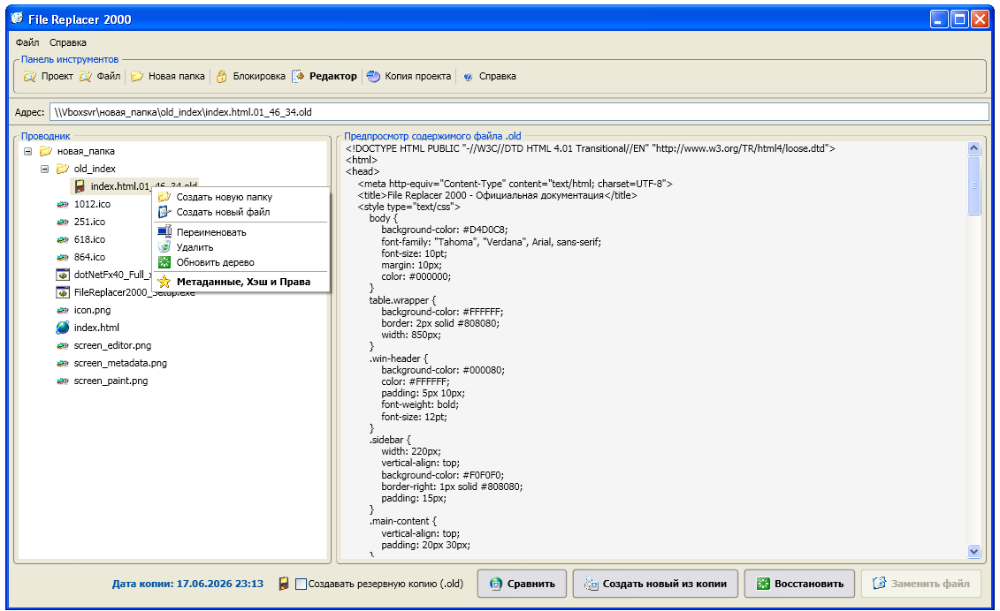
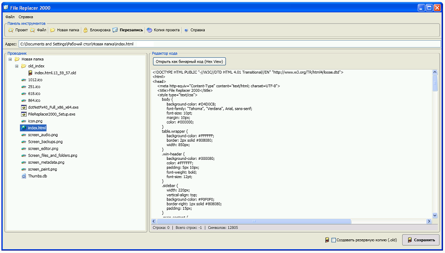
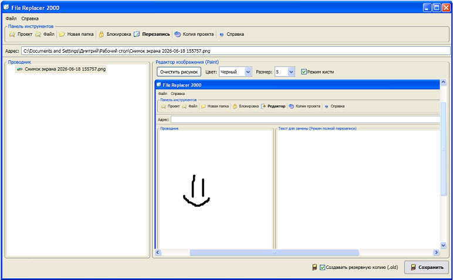
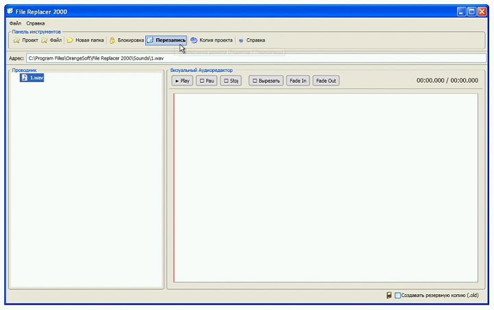
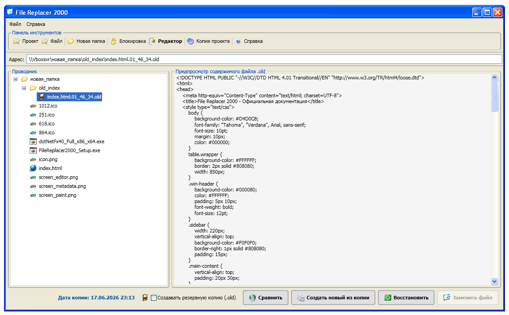
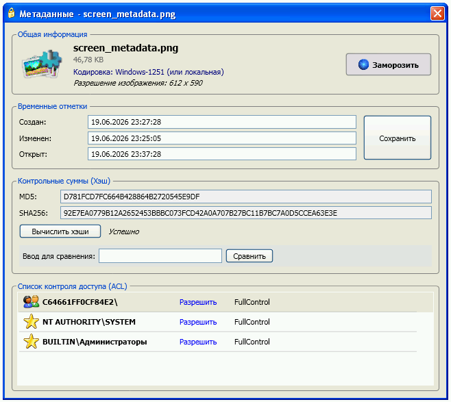
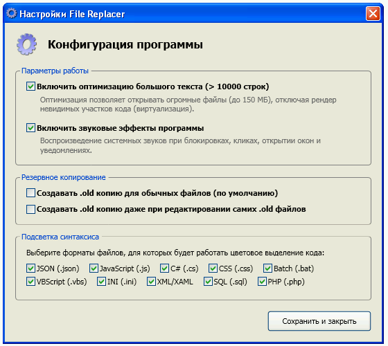

1. О ПРОГРАММЕ
FILE REPLACER 2000
Программное обеспечение предназначено для управления файлами проекта, редактирования исходного кода, проверки контрольных сумм и атрибутов доступа.
Разработано специально для быстрой и надежной работы на платформе Windows XP и выше.
Версия сборки: 0.6 (2026)
Официальный сайт: http://file-replacer-2000.rf.gd/
Программное обеспечение предназначено для управления файлами проекта, редактирования исходного кода, проверки контрольных сумм и атрибутов доступа.
Разработано специально для быстрой и надежной работы на платформе Windows XP и выше.
Версия сборки: 0.6 (2026)
Официальный сайт: http://file-replacer-2000.rf.gd/
2. ИНТЕРФЕЙС (КАК ОТКРЫВАТЬ)
Есть 3 способа загрузить файлы в программу:
1. Адресная строка: Просто вставьте путь к папке или файлу в текстовое поле 'Адрес' и нажмите Enter.
2. Панель инструментов: Нажмите кнопку 'Проект' (для папки) или 'Файл' на верхней панели.
3. Drag & Drop: Просто перетащите любую папку или файл из Windows прямо в окно программы.
1. Адресная строка: Просто вставьте путь к папке или файлу в текстовое поле 'Адрес' и нажмите Enter.
2. Панель инструментов: Нажмите кнопку 'Проект' (для папки) или 'Файл' на верхней панели.
3. Drag & Drop: Просто перетащите любую папку или файл из Windows прямо в окно программы.
3. ФАЙЛЫ И ПАПКИ
ДОСТУПНЫЕ ОПЕРАЦИИ:
Чтобы открыть меню действий, кликните правой кнопкой мыши (ПКМ) по любому файлу или папке в дереве 'Проводник'.
• Создать новую папку — создает директорию внутри выбранной.
• Создать новый файл — инициализация пустого файла.
• Переименовать — системное изменение имени.
• Удалить — классическое удаление.
• Уничтожить без возможности восстановления — программа забивает файл нулями (Secure Erase), после чего его невозможно восстановить программами-рекавери.
• Обновить дерево — принудительное перечитывание диска.
• Узнать процесс / Разблокировать — находит, кто занял файл.
• Метаданные — открытие свойств файла.
Чтобы открыть меню действий, кликните правой кнопкой мыши (ПКМ) по любому файлу или папке в дереве 'Проводник'.
• Создать новую папку — создает директорию внутри выбранной.
• Создать новый файл — инициализация пустого файла.
• Переименовать — системное изменение имени.
• Удалить — классическое удаление.
• Уничтожить без возможности восстановления — программа забивает файл нулями (Secure Erase), после чего его невозможно восстановить программами-рекавери.
• Обновить дерево — принудительное перечитывание диска.
• Узнать процесс / Разблокировать — находит, кто занял файл.
• Метаданные — открытие свойств файла.

4. РЕЖИМ: ПЕРЕЗАПИСЬ
РЕЖИМ ПЕРЕЗАПИСИ (Установлен по умолчанию)
Данный режим предназначен для полной замены содержимого целевого файла.
Как использовать:
1. Выберите файл в обозревателе слева.
2. Внесите новый текст в большое поле справа.
3. Если файл бинарный (видео, фото), перетащите другой файл в зону 'Перетащите любой файл сюда' или нажмите кнопку 'Выбрать файл на ПК'.
4. Нажмите 'Заменить файл' внизу.
Данный режим предназначен для полной замены содержимого целевого файла.
Как использовать:
1. Выберите файл в обозревателе слева.
2. Внесите новый текст в большое поле справа.
3. Если файл бинарный (видео, фото), перетащите другой файл в зону 'Перетащите любой файл сюда' или нажмите кнопку 'Выбрать файл на ПК'.
4. Нажмите 'Заменить файл' внизу.

5. РЕЖИМ: РЕДАКТОР
РЕЖИМ РЕДАКТОРА
Переключение режима осуществляется кнопкой на верхней панели.
Горячие клавиши в редакторе текста:
• Ctrl+C / Ctrl+V / Ctrl+X — Копировать/Вставить/Вырезать
• Ctrl+F — Открыть панель поиска
• Ctrl+H — Открыть панель поиска и замены
• Ctrl+S — Быстрое сохранение файла
Подсветка синтаксиса:
Поддерживается цветовое выделение для кода JSON, JS, C#, CSS, BAT, VBScript, INI, XML/XAML, SQL и PHP.
Встроенные модули:
При открытии изображений (png, jpg) автоматически активируется встроенный Paint.
При открытии звука (wav) активируется Аудиоредактор.
Переключение режима осуществляется кнопкой на верхней панели.
Горячие клавиши в редакторе текста:
• Ctrl+C / Ctrl+V / Ctrl+X — Копировать/Вставить/Вырезать
• Ctrl+F — Открыть панель поиска
• Ctrl+H — Открыть панель поиска и замены
• Ctrl+S — Быстрое сохранение файла
Подсветка синтаксиса:
Поддерживается цветовое выделение для кода JSON, JS, C#, CSS, BAT, VBScript, INI, XML/XAML, SQL и PHP.
Встроенные модули:
При открытии изображений (png, jpg) автоматически активируется встроенный Paint.
При открытии звука (wav) активируется Аудиоредактор.

6. РЕЖИМ: БИНАРНЫЙ КОД (HEX)
БИНАРНЫЙ ПРОСМОТР
Кнопка "Открыть как бинарный код (Hex View)" преобразует любой файл в шестнадцатеричный вид. Это нужно для прямого просмотра дампа памяти (например, exe или dll файлов). В этом режиме файл доступен только для чтения. Для возврата к тексту нажмите кнопку "Вернуться к тексту".
Кнопка "Открыть как бинарный код (Hex View)" преобразует любой файл в шестнадцатеричный вид. Это нужно для прямого просмотра дампа памяти (например, exe или dll файлов). В этом режиме файл доступен только для чтения. Для возврата к тексту нажмите кнопку "Вернуться к тексту".
7. РЕЖИМ: АУДИОРЕДАКТОР
АУДИОРЕДАКТОР
Открывается автоматически при выборе файлов формата аудио в Режиме Редактора.
Позволяет:
- Прослушивать любые аудио файлы, включая MP3 и WAV (Play / Stop)
- Редактировать несжатые WAV (PCM) файлы: Наложение затухания (Fade Out), нарастания (Fade In) и конвертация (Моно <-> Стерео).
- Удерживайте Левую Кнопку Мыши на звуковой волне WAV файла, чтобы выделить фрагмент, к которому применятся эффекты.
Открывается автоматически при выборе файлов формата аудио в Режиме Редактора.
Позволяет:
- Прослушивать любые аудио файлы, включая MP3 и WAV (Play / Stop)
- Редактировать несжатые WAV (PCM) файлы: Наложение затухания (Fade Out), нарастания (Fade In) и конвертация (Моно <-> Стерео).
- Удерживайте Левую Кнопку Мыши на звуковой волне WAV файла, чтобы выделить фрагмент, к которому применятся эффекты.

8. РЕЗЕРВНЫЕ КОПИИ (.OLD)
РЕЗЕРВНОЕ КОПИРОВАНИЕ
При установленной галочке внизу экрана, любое сохранение создает резервную копию (.old) в скрытой папке.
Возможности при выборе .old файла в дереве:
• Восстановить — нажмите, затем дважды кликните по файлу в дереве, который хотите спасти.
• Сравнить — визуальное отображение разницы между копией и оригиналом (Diff).
• Создать новый из копии — выгружает резервную копию в полноценный файл.
В режиме Редактора файлы .old можно редактировать как обычный текст без блокировок.
При установленной галочке внизу экрана, любое сохранение создает резервную копию (.old) в скрытой папке.
Возможности при выборе .old файла в дереве:
• Восстановить — нажмите, затем дважды кликните по файлу в дереве, который хотите спасти.
• Сравнить — визуальное отображение разницы между копией и оригиналом (Diff).
• Создать новый из копии — выгружает резервную копию в полноценный файл.
В режиме Редактора файлы .old можно редактировать как обычный текст без блокировок.

9. МЕТАДАННЫЕ И ПРАВА
ОКНО МЕТАДАННЫХ (Контекстное меню -> Метаданные)
Здесь вы можете изменить дату создания, изменения файла и узнать его кодировку.
• Копирование хэшей: Рассчитайте хэш, затем кликните ЛКМ по тексту MD5 или SHA256 — он мгновенно скопируется в буфер обмена.
• Замораживатель метаданных (Кнопка Заморозить или Шестерня): Блокирует файл от изменений на уровне системы.
Цвета шестерни:
- Голубая — обычный файл
- Голубая со снегом — файл только что заморозили
- Синяя со снегом — файл был заморожен еще до открытия окна
- Синяя — файл только что разморозили.
Здесь вы можете изменить дату создания, изменения файла и узнать его кодировку.
• Копирование хэшей: Рассчитайте хэш, затем кликните ЛКМ по тексту MD5 или SHA256 — он мгновенно скопируется в буфер обмена.
• Замораживатель метаданных (Кнопка Заморозить или Шестерня): Блокирует файл от изменений на уровне системы.
Цвета шестерни:
- Голубая — обычный файл
- Голубая со снегом — файл только что заморозили
- Синяя со снегом — файл был заморожен еще до открытия окна
- Синяя — файл только что разморозили.

10. ПОД КАПОТОМ (ТЕХНИЧЕСКИЕ ДЕТАЛИ)
КАК РАБОТАЕТ ПРОГРАММА:
• Файл настроек (config.ini): На Windows XP программа сохраняет его и в Program Files, и в AppData. Если они различаются, программа предложит синхронизацию. На Windows Vista+ программа пишет только в AppData, чтобы избежать системных блокировкок UAC.
• Звуки: Если папка Sounds отсутствует, программа не вылетит, а просто продолжит работу без звука.
• Ссылка в справке динамическая и зависит от версии Windows в вашем системном реестре.
• Файл настроек (config.ini): На Windows XP программа сохраняет его и в Program Files, и в AppData. Если они различаются, программа предложит синхронизацию. На Windows Vista+ программа пишет только в AppData, чтобы избежать системных блокировкок UAC.
• Звуки: Если папка Sounds отсутствует, программа не вылетит, а просто продолжит работу без звука.
• Ссылка в справке динамическая и зависит от версии Windows в вашем системном реестре.
11. CLI (КОМАНДНАЯ СТРОКА)
File Replacer 2000 поддерживает параметры командной строки (CLI) для автоматизации:
Замена текста без интерфейса:
Программа также использует служебные флаги --freeze и --killpid для внутреннего повышения прав.
Замена текста без интерфейса:
FileReplacer2000.exe --source "ПУТЬ" --replace "СТАРЫЙ ТЕКСТ" "НОВЫЙ ТЕКСТ"Программа также использует служебные флаги --freeze и --killpid для внутреннего повышения прав.
12. ИСТОРИЯ ПРИЛОЖЕНИЯ
В 2001 году была создана программа File Replacer 2000 на основе .NET 1.0 beta 2:
- Появился основной функционал открытия файлов и изменения их
- Появился сайт file-replacer-2000.com
В 2002 году File Replacer 2000 был обновлён до версии 0.1 написанной на полноценном .NET 1.0:
- Появился функционал резервных копий справок и визуального оформления
В 2005 году обновили до 0.3 и до .NET 2.0:
- Был добавлен редактор и настройки.
В 2006 году программа обновилась до 0.4 на .NET 3.0:
- Была добавлена подсветка синтаксиса.
В 2010 году программа обновилась до версии 0.5 на .NET 4.0:
- Появилось меню метаданных.
- Список подсветки синтаксиса стал больше
- Появилась оптимизация для файлов с большим количеством символов
- Появилась возможность заблокировать файл для редактирования
- Появился встроенный редактор картинок
- Появился функционал продвинутого редактирования файлов
В 2013 году появился сайт http://file-replacer-2000.rf.gd/ и file-replacer-2000.com закрылся спустя месяц существования первого.
В 2020 году появился сайт https://file-replacer-2000.vercel.app
В 2026 году появилась эта версия (0.6) File replacer:
- Добавлена функция уничтожения файлов без возможности восстановления (затирка нулями)
- Появился глобальный Drag & Drop для открытия файлов
- Добавлена поддержка параметров командной строки (CLI)
- Появился «Замораживатель» метаданных для блокировки на уровне системы
- Добавлено быстрое копирование хэшей SHA256 и MD5 по клику
- Внедрена система разблокировки занятых файлов (Restart Manager)
- Умная синхронизация INI-файла между Program Files и AppData
- Встроен просмотщик бинарного Hex кода
- Добавлен классический аудиоредактор (WAV)
- Расширена поддержка подсветки синтаксиса для множества старых форматов (VBS, INI, SQL и др.)
- Появился основной функционал открытия файлов и изменения их
- Появился сайт file-replacer-2000.com
В 2002 году File Replacer 2000 был обновлён до версии 0.1 написанной на полноценном .NET 1.0:
- Появился функционал резервных копий справок и визуального оформления
В 2005 году обновили до 0.3 и до .NET 2.0:
- Был добавлен редактор и настройки.
В 2006 году программа обновилась до 0.4 на .NET 3.0:
- Была добавлена подсветка синтаксиса.
В 2010 году программа обновилась до версии 0.5 на .NET 4.0:
- Появилось меню метаданных.
- Список подсветки синтаксиса стал больше
- Появилась оптимизация для файлов с большим количеством символов
- Появилась возможность заблокировать файл для редактирования
- Появился встроенный редактор картинок
- Появился функционал продвинутого редактирования файлов
В 2013 году появился сайт http://file-replacer-2000.rf.gd/ и file-replacer-2000.com закрылся спустя месяц существования первого.
В 2020 году появился сайт https://file-replacer-2000.vercel.app
В 2026 году появилась эта версия (0.6) File replacer:
- Добавлена функция уничтожения файлов без возможности восстановления (затирка нулями)
- Появился глобальный Drag & Drop для открытия файлов
- Добавлена поддержка параметров командной строки (CLI)
- Появился «Замораживатель» метаданных для блокировки на уровне системы
- Добавлено быстрое копирование хэшей SHA256 и MD5 по клику
- Внедрена система разблокировки занятых файлов (Restart Manager)
- Умная синхронизация INI-файла между Program Files и AppData
- Встроен просмотщик бинарного Hex кода
- Добавлен классический аудиоредактор (WAV)
- Расширена поддержка подсветки синтаксиса для множества старых форматов (VBS, INI, SQL и др.)
13. НАСТРОЙКИ
Раздел настроек позволяет тонко сконфигурировать работу File Replacer 2000:
ОПТИМИЗАЦИЯ ТЕКСТА: Если файл превышает 10000 строк, программа может автоматически отключить перенос слов, активируя аппаратную виртуализацию. Это позволяет редактировать файлы логов весом до 150 МБ без зависаний.
ЗВУКИ: Отключение всех системных звуковых эффектов формата .wav.
РЕЗЕРВНОЕ КОПИРОВАНИЕ: Тонкая настройка создания файлов .old. Можно включить обязательное резервирование даже при изменении самих бэкапов.
ПОДСВЕТКА СИНТАКСИСА: Полное управление языками, для которых будет работать цветовое кодирование (JSON, JS, C#, CSS, BAT, VBS, INI, XML, SQL, PHP).
ОПТИМИЗАЦИЯ ТЕКСТА: Если файл превышает 10000 строк, программа может автоматически отключить перенос слов, активируя аппаратную виртуализацию. Это позволяет редактировать файлы логов весом до 150 МБ без зависаний.
ЗВУКИ: Отключение всех системных звуковых эффектов формата .wav.
РЕЗЕРВНОЕ КОПИРОВАНИЕ: Тонкая настройка создания файлов .old. Можно включить обязательное резервирование даже при изменении самих бэкапов.
ПОДСВЕТКА СИНТАКСИСА: Полное управление языками, для которых будет работать цветовое кодирование (JSON, JS, C#, CSS, BAT, VBS, INI, XML, SQL, PHP).

14. СЛОВАРЬ ИКОНОК
| Закрытая папка (иконка пустой папки) | |
| Открытая папка (иконка папки) | |
| Земля с кольцом (иконка файлов типа html) | |
| Земля как коврик для мыши (иконка для типа файлов css) | |
| Рука (иконка для «все» в метаданных раздел прав) | |
| Полная корзина (иконка удаления файла) | |
| Иконка ключа (иконка pem файлов) | |
| Папка с лупой (иконка открытия файла/проекта) | |
| Замок (иконка для помечания заблокированных файлов) | |
| Стол на котором бумажка по которой ведёт карандаш (иконка режима перезаписи) | |
| Блокнот с шестерёнкой (иконка для файлов типа bat, cs, т.д.) | |
| Блокнот (иконка для файлов типа txt) | |
| Бумага на которой нарисованы шестерни (иконка для файлов типа xaml) | |
| 4 битная иконка окна в котором шестерёнка (иконка для exe файлов win32) | |
| Листок с письменной курсивной «а» (иконка для snlx и sln) | |
| Звезда (показ администратора/системы в правах) | |
| Земля в которую втыкается кабель (иконка для файлов типа crx) | |
| Иконка затирки файла (испаряющийся листок) | |
| Листок с кино плёнкой (иконка для видео mp4, и др.) | |
| Листок с нотой (иконка для аудио mp3, и др.) | |
| 3 фотографии с пейзажем (иконка для изображений) | |
| Земля с зелёной стрелкой (общественный доступ по сети) | |
| Поле ввода и курсор (иконка переименования) | |
| Две земли (сравнить файл old с другим) | |
| Принтер (создать новый файл из .old) | |
| Люди (иконка прав пользователя) | |
| Большая шестерёнка (раздел настроек) | |
| Маленькая шестерёнка (иконка окна настроек) | |
| 3D инфографика памяти (резервная копия проекта) | |
| Листок с вопросительным знаком (неизвестный формат) | |
| 8 битная иконка окна с шестерёнкой (exe win64) | |
| Карандаш ставит галочку (создание нового файла) | |
| Дискета (иконка файлов типа .old) | |
| Зелёная кнопка перезагрузки | |
| Вопросительный знак (иконка справки) | |
| Кнопка со снежинкой (Заморозить) | |
| Лупа просвечивает замок (Кем занят файл) | |
| Разбитая лупа (Насильное завершение процесса) | |
| Голубая шестерёнка | |
| Синея шестерёнка | |
| Голубая замороженная шестерёнка (Заморожено только что) | |
| Синея замороженная шестерёнка (Заморожено ранее) |
Центр загрузки ПО
|
FR 2000 Setup Github инсталлятор СКАЧАТЬ (EXE) Статус: Временно недоступен
|
Внешнее зеркало HTTP Репозиторий СКАЧАТЬ С ЗЕРКАЛА MD5: 273AE9A6EEED1329FC21748E2A57B794
|
Системные файлы Требуется для работы .NET FRAMEWORK 4.0 Web Installer
|
OrangeSoft © 2001-2026.
Разработано для ОС семейства Windows (XP SP3 и выше).
Разработано для ОС семейства Windows (XP SP3 и выше).